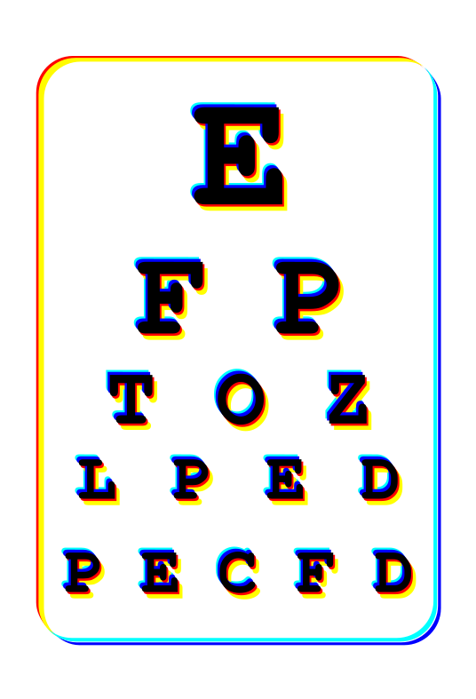
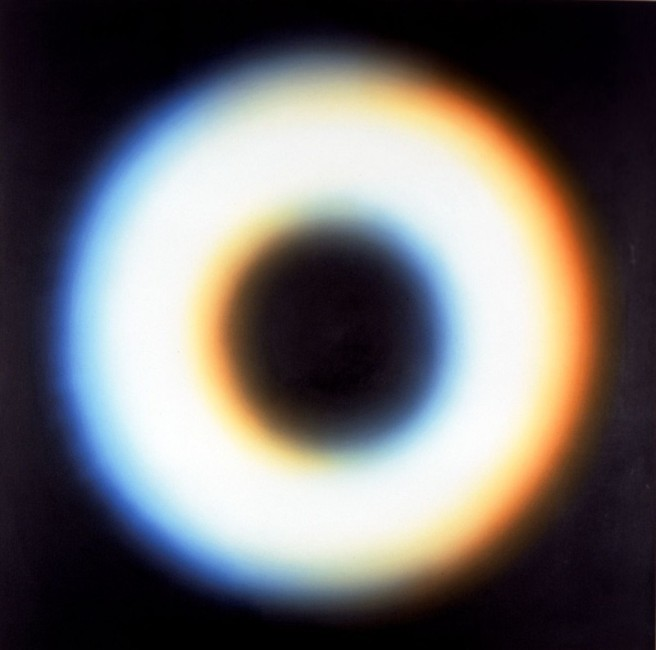

Chromatic aberration
2021-04-21
What am I looking at?
Recently I got a new pair of glasses. Can you see these red/yellow and blue/turquoise edges? This is what I see when there's a high contrast between two blobs of colors, but only when I look at them at an angle. Which side is red and which is blue depends on where the object is in my field of view. The effect is especially strong in direct sunlight. It is called chromatic aberration.
While building this site I observed a really cool thing I didn't expect - when I rotate my head at a certain angle I can almost make the colors on the screen disappear. It's like the colors and the chromatic aberration cancel out.
Here's a painting depicting the effect by Wojciech Fangor, a Polish artist.
SM 34 by Wojciech Fangor
And here's a beautiful artwork from Grif Studio. They also put up a gallery and a short film capturing a similar phenomenon.

Chromatic Black from Grif Studio